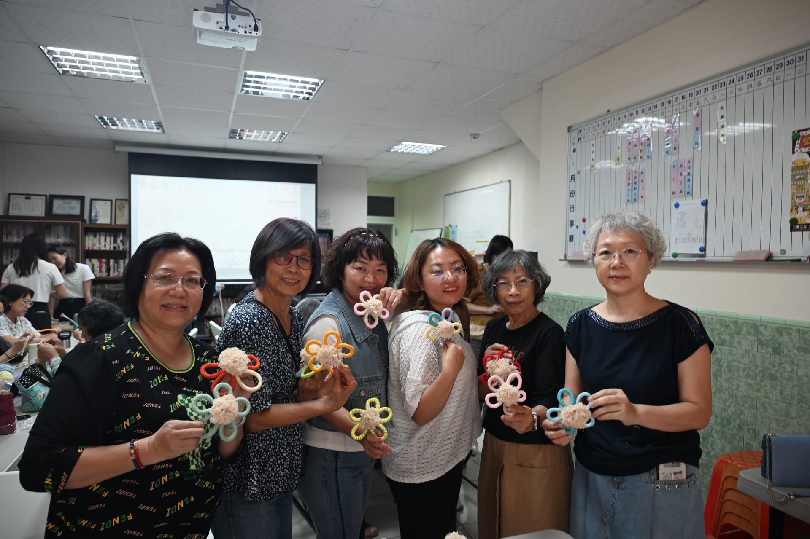
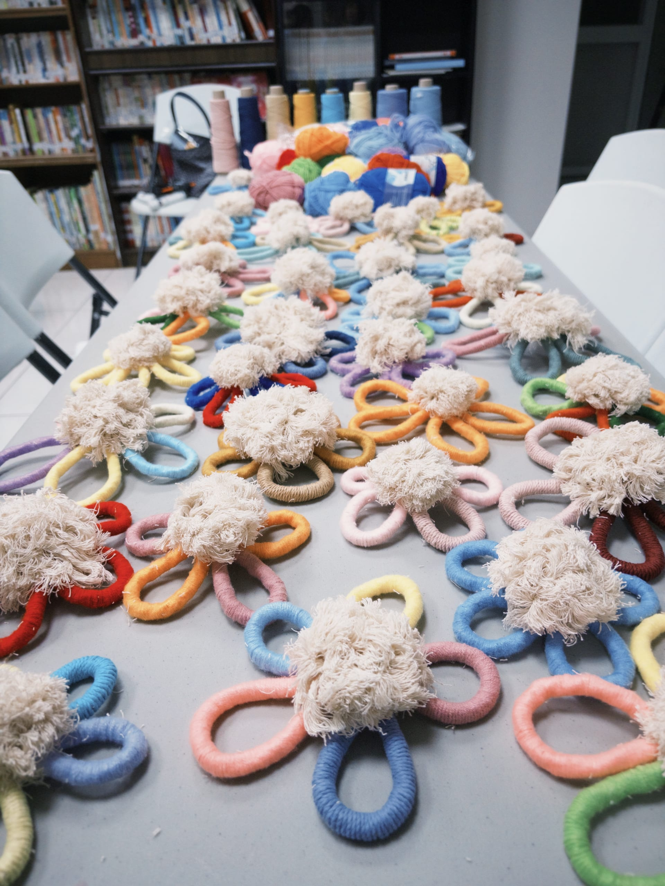
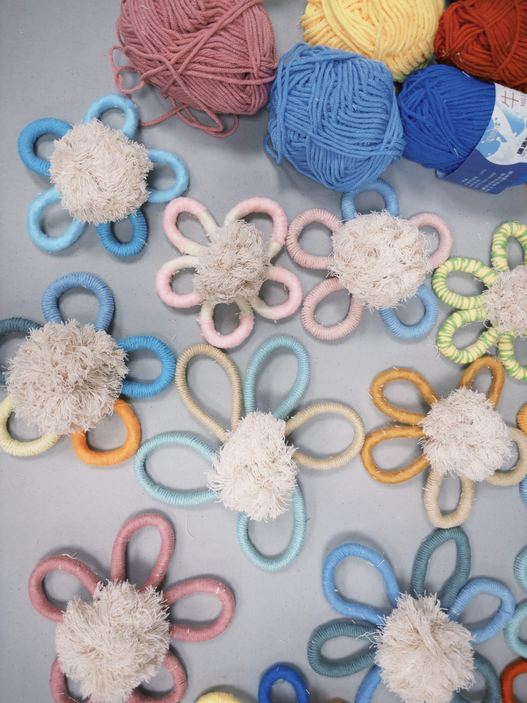

揚帆主婦社一直是《鹽夏不夜埕》重要的合作夥伴之一。從去年的《二十四節氣》到今年的《花落成流》，姐姐們每一年都帶給我們不一樣的非凡面貌，展現出極具韌性與溫柔的在地女性力量。2026 年 4 月 2 日，策展團隊來到位於鹽埕區新興街的揚帆主婦社據點，將整個下午的時光交給姐姐們，合作辦理了兩場《花落成流》毛線花製作工作坊。此次工作坊以毛線花為載體，試圖引導大家透過編織，將那些平時無法言說的心情，轉化為具象的實體。

活動一開始，我們與揚帆主婦社一同回顧了去年合作的感動，並分享今年鹽夏的主題《花轟》——以花的綻放，回應情緒的張力與流動。接著便進入重頭戲：毛線花製作教學。我們特別邀請到手作編織品牌《Solemates》的創辦人司于老師擔任講師。司于老師認為：「線，不只是材料本身，更象徵文化、情感與創作之間的連結。」在這次的工作坊中，老師也期盼能透過一條條毛線，串起主婦社成員們的情感展現，以及對鹽埕在地文化的深刻記憶。
老師首先請大家拿好五條素色的毛線，將其綁好串起，作為毛線花的花蕊；接著讓大家自由挑選喜歡的顏色來製作花瓣。在這個環節中，姐姐們的獨特風格展露無遺：有些人偏愛素淨的單色，有些人則喜歡大膽的雙色拼接。無數條顏色各異的毛線，在成員們的手中交織，編織出專屬於自己風格的毛線花。

而在動手做的過程中，更能看見成員間深厚的情誼——她們熱絡地分享挑選顏色的原因、互相研究編織手法，先學會的姐妹甚至主動當起小老師，手把手教導剛抵達的同伴。短短一個半小時的工作坊，伴隨著悠揚的背景音樂與姐姐們的歡聲笑語，氛圍無比輕鬆溫馨。

工作坊尾聲，我們將大家親手編織的毛線花一一收集，鄭重交棒給司于老師。司于老師穩穩接住每位姐妹的「落花」後，在這一個多月的時間裡，將把它們細心整理、匯聚成一件大型裝置藝術。這件承載著社區共創力量的作品，即將在 2026 鹽夏不夜埕《花轟》中展示。
今年 5/16 到 5/23，誠摯邀請大家漫步至鹽埕東區，尋找由揚帆主婦社共同織就的《花落成流》，細細感受鹽埕女性力量最溫柔的情緒綻放！